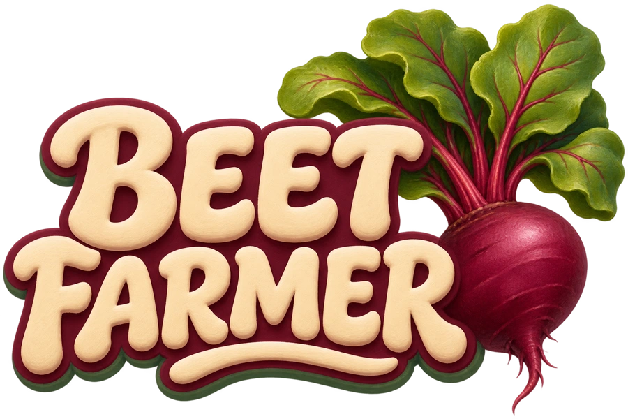
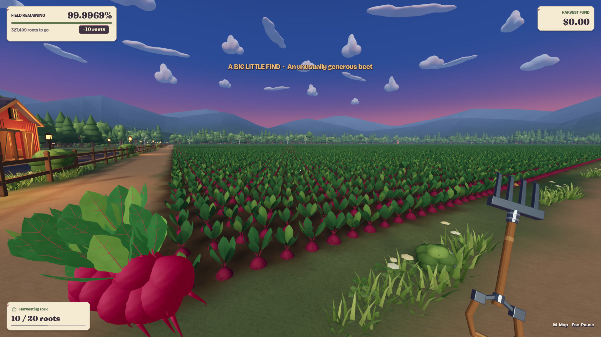
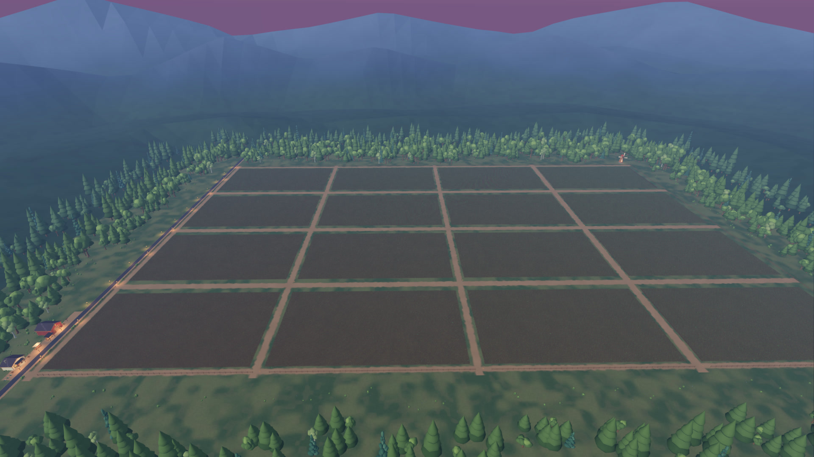
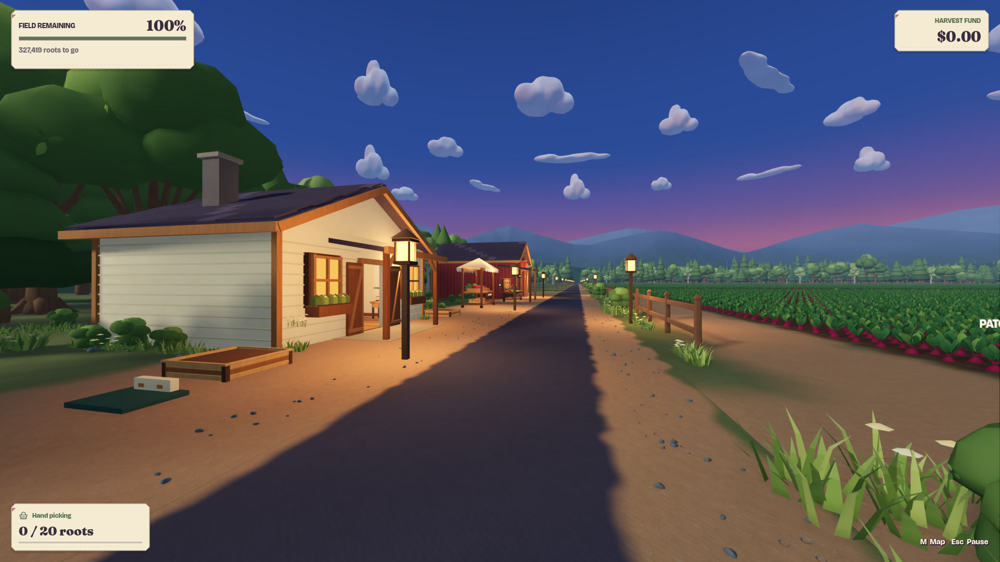
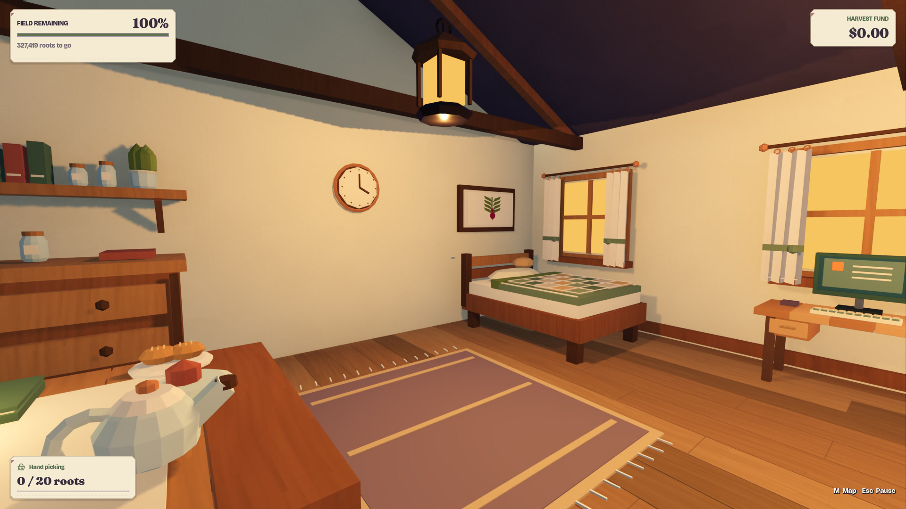

The harvest is happening.
Harvesting, bundling, selling, upgrades, Root Rovers, enterable buildings, local saving, and the game’s introductory and completion sequences are implemented.
A LITTLE ESCAPE FROM AUSTIN MERIDIAN

In developmentA cozy first-person harvesting game about clearing an enormous field of beets. Pull, bundle, sell, and upgrade—one satisfying harvest at a time.
Find your harvesting rhythmPlanned for Steam · Target price US$2.99
Release date unannounced

View full image ↗Features of the current development build; details may change before release.
SETTLE INTO A LITTLE ROUTINE
Hold to harvest, watch each root pop from the soil, and gather your crops into a close-held bundle. A big field starts to feel smaller with every trip.
Hold to harvest and watch the roots release from the soil, one after another.
Gather a handful, then a whole armful. Keep an eye on how much you can carry.
Turn your harvest into in-game funds for the next round of improvements.
Improve your tools, gathering speed, harvest size, and carrying capacity. Then head back to the field.
EVERGREENS. WARM WINDOWS. ROOM TO WANDER.
A farm nestled among evergreens and dusk-blue hills. Warm buildings, leafy beetroots, and a job you can see gradually taking shape.

View full image ↗Sixteen lots. One enormous harvest.
Development render — November 2026. Scripted aerial camera; not the normal first-person view.
View full image ↗Lanterns, painted timber, and a lavender horizon.
Development gameplay — November 2026. Scripted capture.
View full image ↗Step inside the cottage and barn between trips.
Development gameplay — November 2026. Scripted cottage capture.All images show the Beet Farmer identity redesign from November 2026. These are actual development renders, not concept scenes. Some captures use staged inventory or scripted cameras. Visuals, interfaces, and features are still being refined. Select an image to view it in full.
LITTLE THINGS THAT HELP
There’s more to a good harvest than a bigger bundle. Open a field note to see what’s already taking shape in the current build.
Recruit up to three Root Rovers, each independently configurable, to help with the enormous field.
Tool and capacity improvements are part of the current build, with physical upgrade deliveries arriving by truck.
The current build includes local saving, a farm map, a tutorial, and settings. Your harvest is a finite task rather than a field that continually regrows.
STILL GROWING INTO ITS FINAL SHAPE
The harvesting loop is playable in the development build. There’s more work ahead before the gates open to everyone.
Harvesting, bundling, selling, upgrades, Root Rovers, enterable buildings, local saving, and the game’s introductory and completion sequences are implemented.
Player feedback, bug fixes, visual refinement, progression balancing, accessibility and comfort review, release testing, and asset-license review remain ahead.
A FUTURE HARVEST
Target price US$2.99. Release date unannounced. There is no public download or verified Steam store page to link to yet.
Questions about the game?
AustinMeridianHQ@gmail.com